Securing our Sensitive Data
The demand for and challenges of Confidential Computing on High Performance Computing
2026-12-03
About the presenter
- Duncan Leggat
- Former experimental particle physicist
- RSE in UCL Advanced Research Computing
- Specialising in HPC,
- GPU training,
- Confidential computing.
Analysing sensitive data
What is sensitive data?
Data that contains information that must not be unintentionally disclosed
- Personal data that directly or indirectly identifies individuals
- Medical or other protected category data
- Sensitive IP
- Environmental data


Stock photos from Magnific
Anything you would store in a data safe haven, TRE, etc.
Using secure data
Current solutions:
Anonymisation
- Can’t always guarantee against indirect identification
- Not enough information left for some analyses
Trusted Research Environment (TRE)
- Strict governance and technical controls
- Limited compute pool
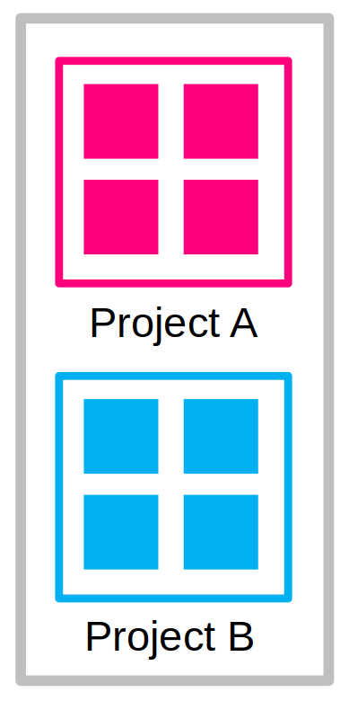
If we want to carry out intensive analyses, particular those with AI/ML workloads, we need to be able to process our sensitive data securely on HPC systems.
FRIDGE and TRUSTEE
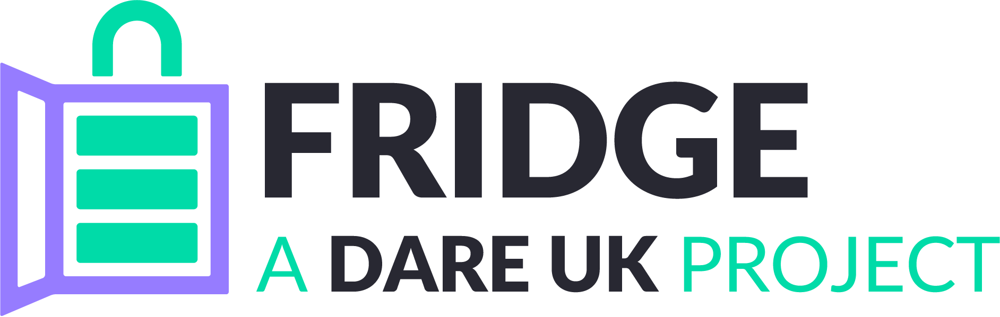
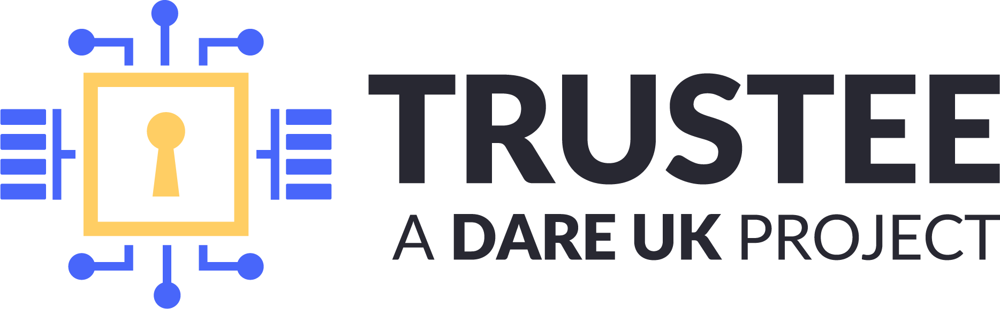
Introduction to FRIDGE
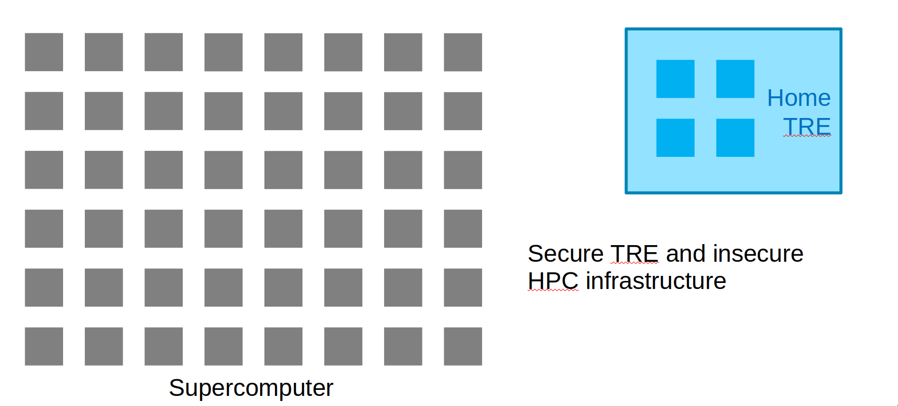
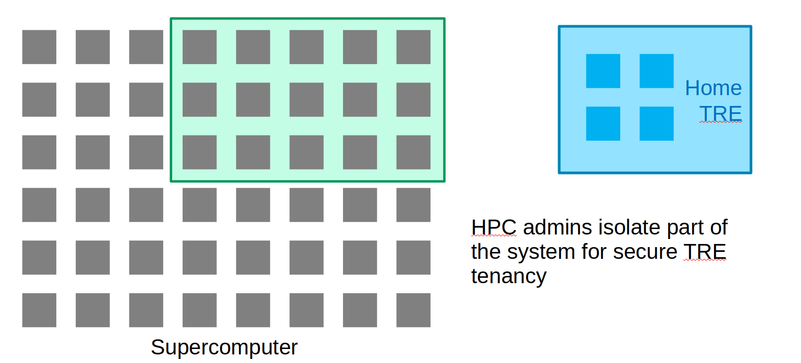
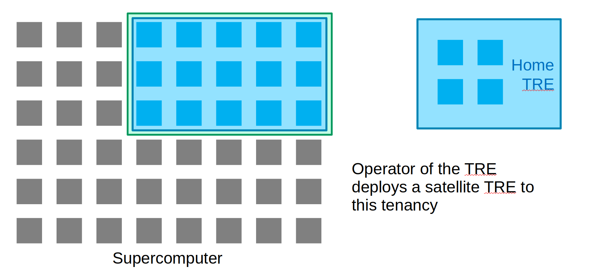
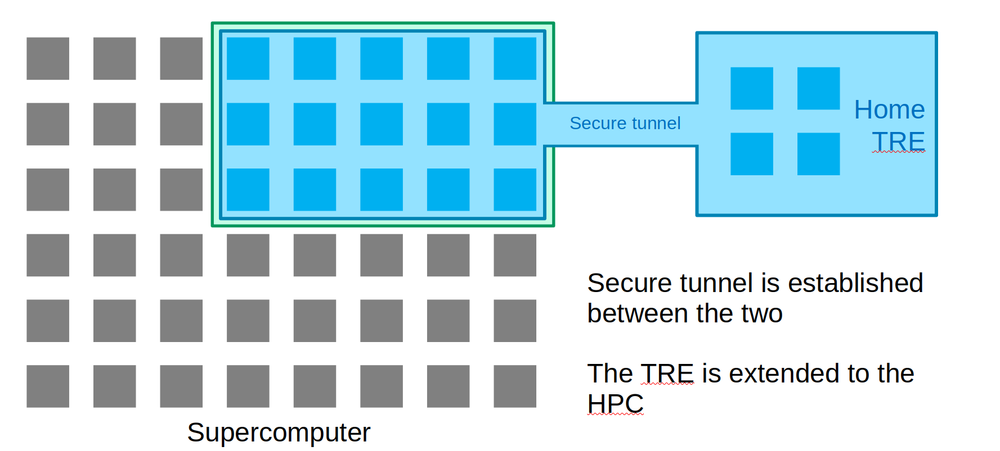
Federated Research Infrastructure by Data Governance Extension (FRIDGE) can be thought of as portable TRE that can be deployed on HPC clusters
Limits of FRIDGE
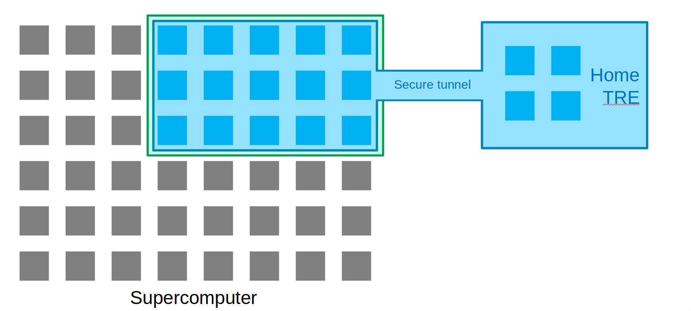
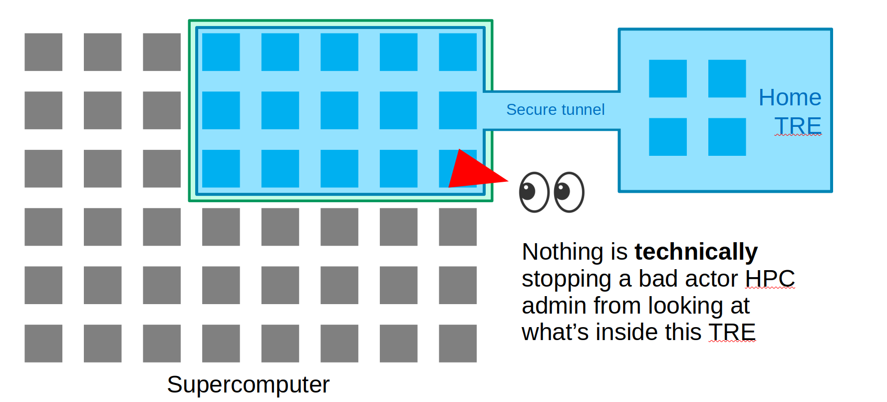
- Relies on governance agreements with HPC provider.
- Though it would break the agreement, they can look at the data being analysed.
- For particularly sensitive data, therefore, this is not enough security.
Introducing Confidential Computing
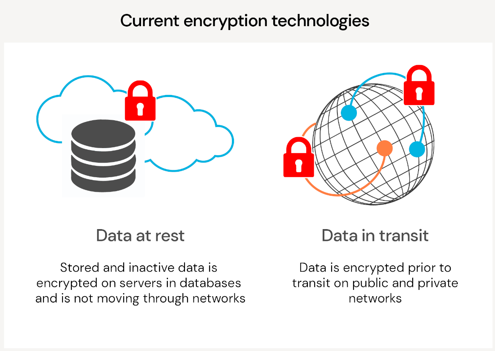
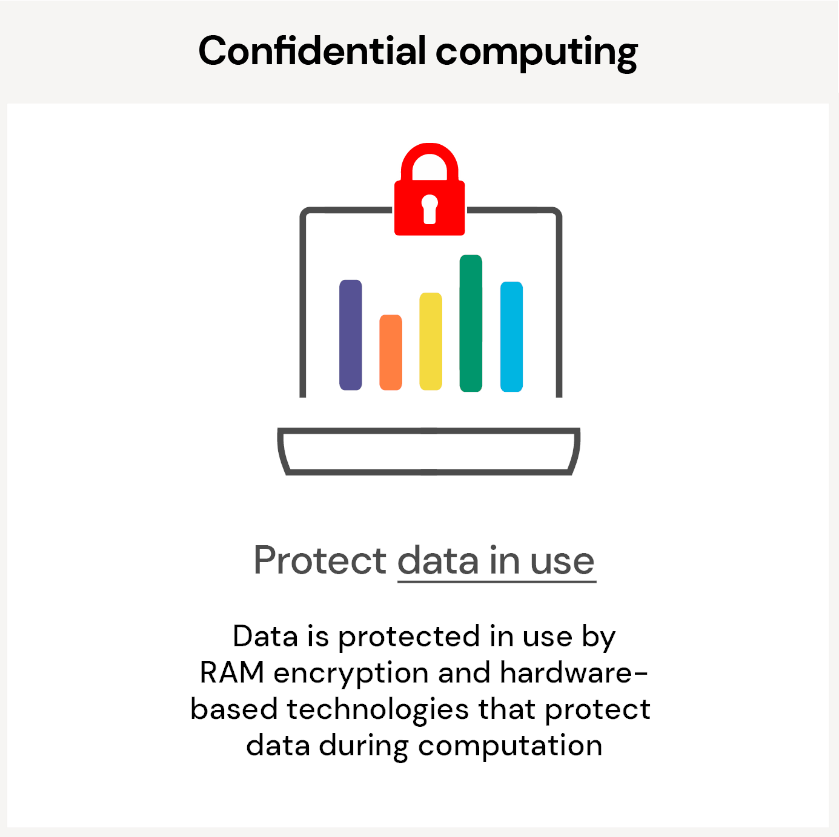
The Trusted Execution Environment
An attestable, hardware-based environment to protect data.
Confidential Computing Consortium defines a TEE as an environment that provides:
- Data integrity,
- Data confidentiality,
- Code integrity.
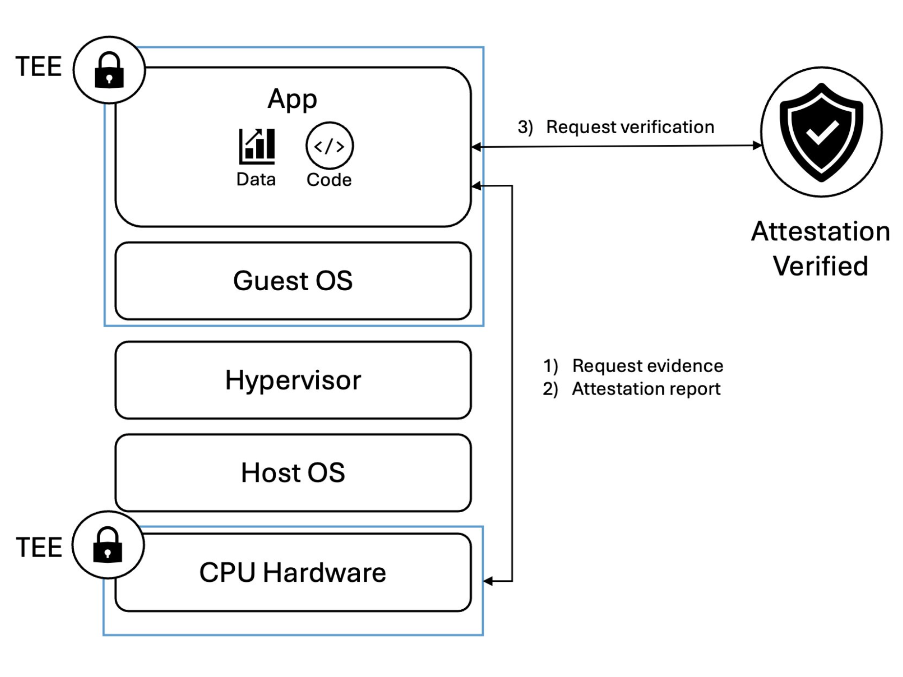
A TEE is usually an ‘enclave’ or a Confidential Virtual Machine (CVM) that is cryptographically isolated from the rest of the system, including from the OS, the hypervisor and superusers.
TRUSTEE - adding TEEs to FRIDGE
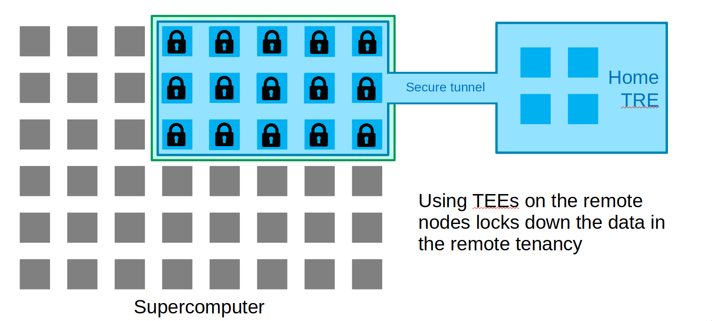
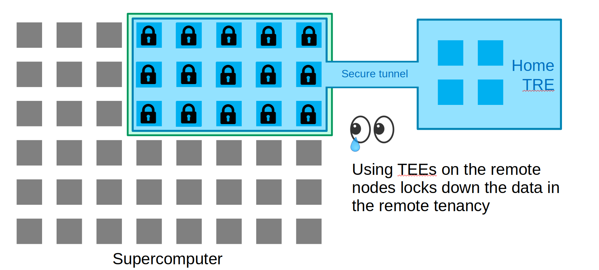
Trusted Research on Untrusted Systems using TEEs (TRUSTEE)
Vendor implementations of TEEs
| Vendor | TEE technology | Generation implemented |
|---|---|---|
| Intel | Trust Domain Extensions (TDX) | 4th gen (Sapphire Rapids) |
| AMD | Secure Encrypted Virutalisation (SEV) | EPYC 7003 (Milan) onwards) |
| TEE Device Interface Security Protocol (TDISP) | EPYC 9005 (Turin) onwards) | |
| ARM | Realm Management Extension (RME) | Optional from ARM v9 |
| Nvidia | GPU CC mode | Hopper and Blackwell GPUs 1 |
So this technology exists in current HPC infrastructure
Can we turn on TEEs on a current, working HPC?
We worked with the COSMA HPC sysadmins to see if we could deploy a TEE on a live HPC system.
2 goals
- Create an SEV-SNP enabled CVM on an EPYC-based node,
- Deploying a CC-enabled TEE that included an H100.
So it was a smooth process and we are now able to process sensitive data on HPCs, right?
No.
Difficulties in implementing TEEs on current HPC
Getting one TEE running is difficult
BIOS settings
- CC not enabled by default in hardware
- Not too difficult to update
OS and kernel version
- Rocky and RHEL use stable LTS Linux kernels, which don’t have full CC enabled
| OS | Linux kernel | CC support? |
|---|---|---|
| Rocky/RHEL 9 | 5.14 | No |
| Rocky/RHEL 10 | 6.12 | Technical preview |
Updating at scale is largely impossible
- HPC prioritises stability and up-time.
- Updating OS threatens both:
- A lot of work to check necessary packages on the new OS,
- Updating hundreds of nodes puts a significant dent in up-time.
Is there no hope for CC on HPC?
[sad face image]
TEEs on future systems
How we would implement TEEs on future HPC infrastructure
- Hardware must support TEEs
- Not too difficult, most current-gen hardware now does in various forms
- Firmware must be configured correctly
- Ensure BIOS settings to enable CCs are set correctly
- Choose an appropriate Operating System
- By then, Rocky may fully support CC, or investigate alternatives [check alts]
** Should we implement them?**
- That topic is outside the scope of this talk.
Conclusions
[Thoughtful and relevant conclusions go here]